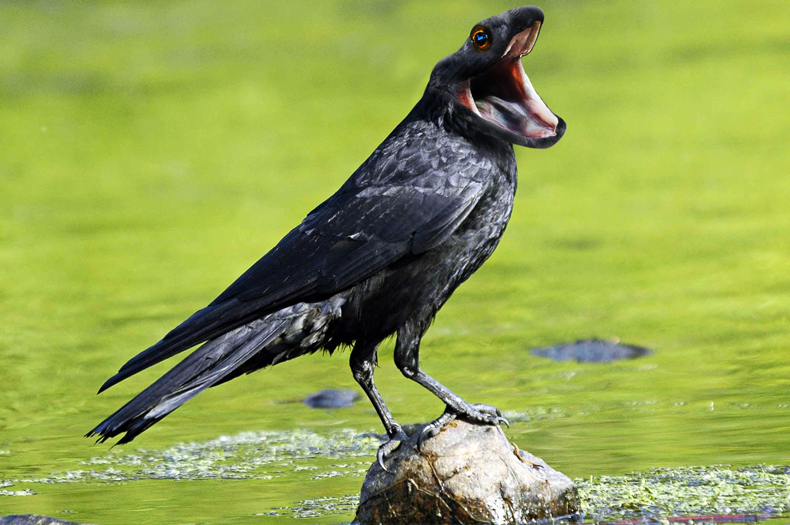

On this page I've chosen to showcase some interesting creature compositions.
The edits were made in Photoshop and used existing photographic material. The material was combined to create surreal imagery that involves animals.
I think they're a good showcase of both my imagination and my image editing skills.